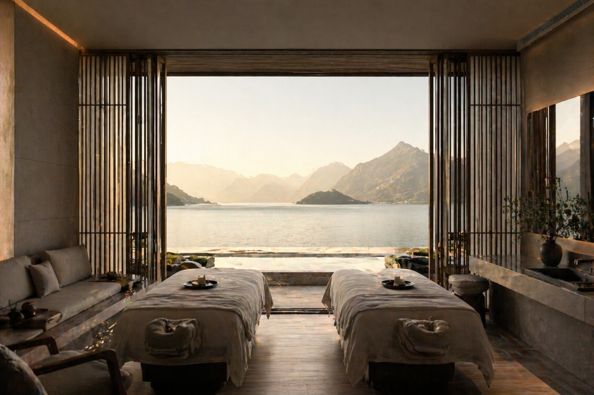

Six names that define modern luxury hospitality.

Aman pioneered the idea of the small, intensely private resort. Each property is built into its landscape — temples in Bhutan, dunes in Utah, palaces in Venice — with an unmistakable architectural language of stone, water and quiet. The brand stands for solitude, ritual and absolute discretion.
The benchmark for consistent five-star service across more than 50 countries. From the historic George V in Paris to over-water bungalows in Bora Bora, Four Seasons defines what reliable, generous luxury feels like — anywhere in the world.
A different definition of luxury — barefoot, conscious, deeply restorative. Six Senses pairs world-class wellness programs with serious sustainability practice, set in some of the planet's most beautiful coastal and mountain landscapes.
Old-world grandeur with a modern address book. Born from John Jacob Astor IV's vision in 1904, St. Regis is known for its butler service, rich interiors and signature rituals — the evening sabering of champagne included — across cities and resorts worldwide.
Rosewood's "A Sense of Place" philosophy means no two hotels feel the same. Each property — from Hôtel de Crillon in Paris to The Carlyle in New York — is rooted in the architecture, art and culture of its city, designed to feel less like a chain and more like a private residence.
Where the journey is the destination. Belmond began with the revival of the Venice Simplon-Orient-Express and has since gathered a portfolio of the world's most romantic experiences — Italian cliffside hotels, Peruvian sleeper trains, river barges through Burgundy.
This list is a starting point, not a ranking. Each of these groups represents a different philosophy of hospitality — and the best one is simply the one that speaks to how you like to travel.